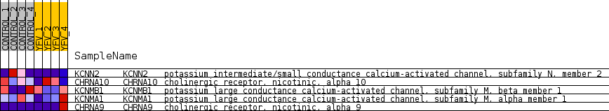
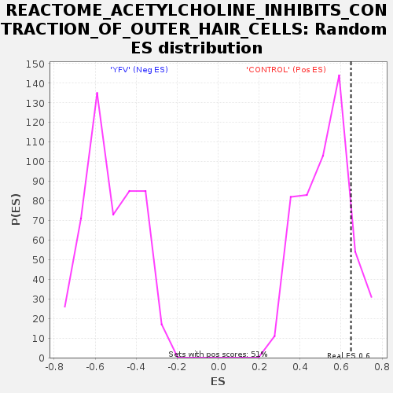

Profile of the Running ES Score & Positions of GeneSet Members on the Rank Ordered List
| Dataset | MATRIZ_GSE99081_collapsed_to_symbols.gsea_CLASE_99081.cls#CONTROL_versus_YFV |
| Phenotype | gsea_CLASE_99081.cls#CONTROL_versus_YFV |
| Upregulated in class | CONTROL |
| GeneSet | REACTOME_ACETYLCHOLINE_INHIBITS_CONTRACTION_OF_OUTER_HAIR_CELLS |
| Enrichment Score (ES) | 0.64848006 |
| Normalized Enrichment Score (NES) | 1.2503364 |
| Nominal p-value | 0.11811024 |
| FDR q-value | 0.992708 |
| FWER p-Value | 1.0 |
| SYMBOL | TITLE | RANK IN GENE LIST | RANK METRIC SCORE | RUNNING ES | CORE ENRICHMENT | |
|---|---|---|---|---|---|---|
| 1 | KCNN2 | potassium intermediate/small conductance calcium-activated channel, subfamily N, member 2 | 1164 | 0.604 | 0.6485 | Yes |
| 2 | CHRNA10 | cholinergic receptor, nicotinic, alpha 10 | 5477 | 0.115 | 0.5198 | No |
| 3 | KCNMB1 | potassium large conductance calcium-activated channel, subfamily M, beta member 1 | 5859 | 0.088 | 0.6008 | No |
| 4 | KCNMA1 | potassium large conductance calcium-activated channel, subfamily M, alpha member 1 | 7030 | 0.009 | 0.5394 | No |
| 5 | CHRNA9 | cholinergic receptor, nicotinic, alpha 9 | 9960 | -0.023 | 0.3868 | No |

